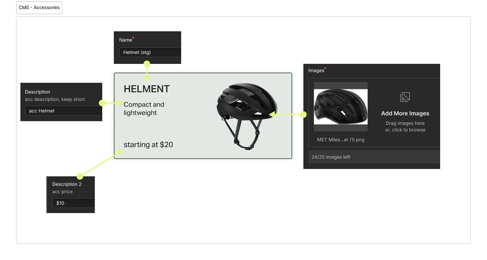

01 — Old User Experience
the 1st version launched in early 2024


02 — Goal
03 — Problem Statement
Internal maintenance considerations included:
Dark Mode · Pricing transparency · Accessory options · Location track · Bike color display · Plan cost · Clear description · Bike stock
04 — Webflow
Under development resource constraints, I led the collaboration with one engineer to migrate the data source to Webflow CMS as a short-term solution. This allowed the marketing team to update content and launch changes independently — without relying on engineering cycles.



05 — Final Interface


06 — Metrics
20 → 35
increase reservation / week